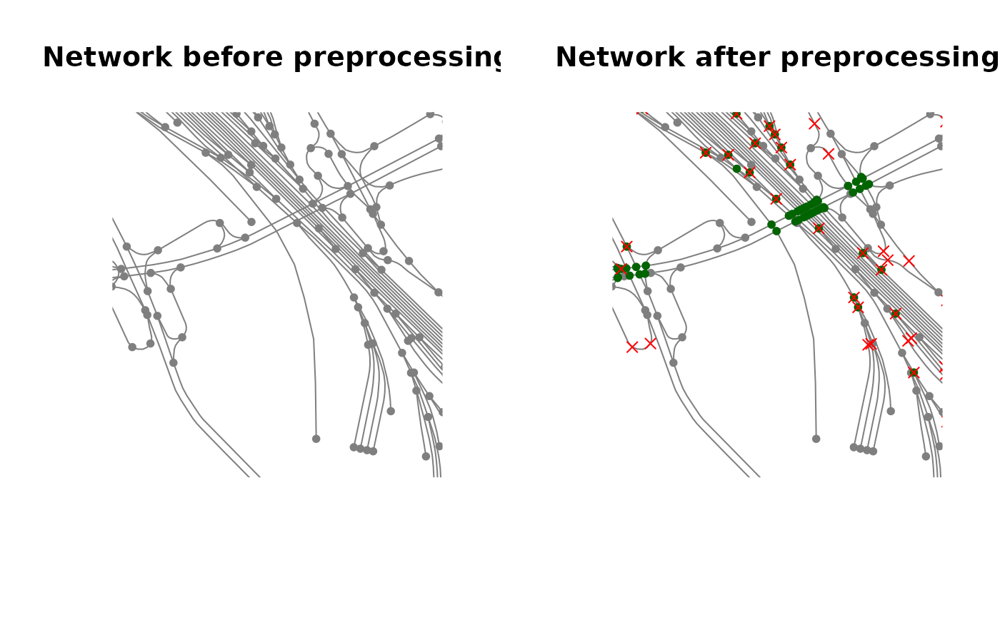

3. Preparing the network for delineation
Source:vignettes/vig_03-network-preparation.Rmd
vig_03-network-preparation.Rmd
library(rcrisp)
#> Warning in check_cache(): Cache dir: /home/runner/.cache/R/rcrisp - size: 12 MB - oldest file from: 2025-07-31.
#> Clean up files older than 30 days with: `rcrisp::clear_cache('2025-07-01')` (or remove all cached files with: `rcrisp::clear_cache()`.
library(dplyr)
library(sf)
library(sfnetworks)
bucharest_osm <- get_osm_example_data()
bucharest_dem <- get_dem_example_data()1. Input data
In this article we show how to set up the spatial network for a city
before using it for urban river corridor delineation. We work with the
OSM data for the city of Bucharest provided in rcrisp example data. See
how to get your own OSM data in
vignette("getting-osm-data").
We start by loading the OSM data. According to the delineation method, all persistent physical structures need to be considered. Therefore, the network will contain both streets and railways from OSM.
streets <- bucharest_osm$streets
railways <- bucharest_osm$railwaysNote: If the city in question contains other
surface-level structures that need to be included in the network, such
as above-ground metro lines, retrieve them with the appropriate OSM tags
following the instructions in vignette("getting-osm-data")
and include them here in the network.
2. Setting up the network
After combining the streets and railway lines, we create a network object.
network <- bind_rows(streets, railways) |>
as_sfnetwork(directed = FALSE) |>
activate("nodes") |>
mutate(node_id = row_number())To be able to use the network for delineation, we need to flatten it (that is, project bridges to the ground surface) and add nodes at all intersections between edges.
network_new <- flatten_network(network)The function above first identifies unique apparent intersections between edges. Then it injects those points within the edge geometries (linestrings), so that they can be raised as network nodes in the cleaning step.
Note: sfnetworks::st_network_blend
cannot be used for this purpose, because this function only adds
external points to one edge (the closest one).
3. Network cleaning
We now perform standard cleaning tasks on the network: subdividing edges by adding missing nodes, removing pseudo-nodes and keeping only the main component of the network.
network_cleaned <- clean_network(network_new)4. Visualise cleaned network
Visualize cleaned network:
network_new_nodes <- network_cleaned |>
activate("nodes") |>
filter(is.na(node_id)) |>
activate("edges") |>
filter(is.na(from) & is.na(to))
network_removed_nodes <- network |>
activate("nodes") |>
filter(!node_id %in% (activate(network_cleaned, "nodes") |>
pull(node_id))) |>
activate("edges") |>
filter(is.na(from) & is.na(to))
par(mfrow = c(1, 2))
plot(network, col = "grey50",
xlim = c(425100, 425400), ylim = c(4922400, 4923000),
main = "Network before preprocessing")
plot(network_cleaned |> activate("nodes"), col = "grey50",
xlim = c(425100, 425400), ylim = c(4922400, 4923000),
main = "Network after preprocessing")
plot(network_new_nodes, col = "darkgreen",
xlim = c(425100, 425400), ylim = c(4922400, 4923000),
main = "Network after preprocessing", add = TRUE)
plot(network_removed_nodes, col = "red", pch = 4,
xlim = c(425100, 425400), ylim = c(4922400, 4923000),
main = "Network after preprocessing", add = TRUE)